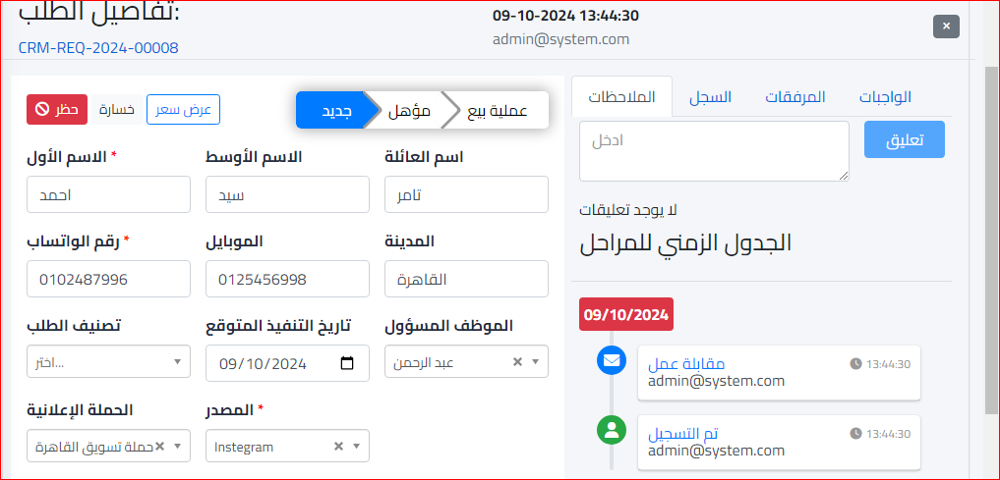

شيت المتابعة
يتم فتح موديول ادارة علاقات العملاء ومنه نختار شيت المتابعة كالتالي :
وسيتم فتح الشاشة التالية :
ولعمل طلب جديد يتم الضغط على زر طلب جديد وستظهر الشاشة التالية :
وبعد ادخال البيانات المطلوبة نضغط انشاء
واذا اردنا اضافة تفاصيل كاملة عن العميل نضغط خيار اضف التفاصيل الكاملة وستظهر الشاشة التالية :
ثم بعد إدخال البيانات المطلوبة نقوم بالضغط علي زر إنشاء
وستظهر الشاشة التالية :
ويمكن إسناد مهمة متابعة هذا العميل إلى أي موظف معين كما في الشاشة السابقة كل ما عليك فعله هو اختيار الموظف ثم الضغط زر صح للتأكيد
ويمكن ايضا متابعة تفاصيل الطلب عن طريق النقر على الطلب نفسه وستفتح الشاشة التالية :
ويمكن تحديد وتغيير المرحلة حسب التقدم الفعلي مع العميل وكذلك تقييم الطلب
حظر : يتم نقره في حالة أرادت الشركة حظر هذا العميل لأي سبب كان
خسارة : وهو عبارة عن خسارة التقدم مع العميل وسيتم فتح نافذة لعرض سبب الخسارة كالاتي :
و ستظهر الصفحة كالتالي ولا يمكن التعديل فيها :
عرض سعر : وهو مؤشر عن نجاح العملية مع العميل وسيتم التوجه مباشرة الى صفحة عروض البيع وقد تكلمنا عنها سابقا باستفاضة بملف دورة المبيعات
جديد : وهي عبارة عن المرحلة البدائية مع العميل وتكون اختيارات المحلة كالتالي ويمكن ايضا تقييم الطلب بواسطة الموظف المسؤول عن متابعة العميل كالتالي :
مؤهل : وهي الخطوة المتقدمة قليلا مع العميل فهنا يمكن ارسال العرض والتفاوض بشأنه كالتالي :
عملية بيع : وهي المرحلة النهائية والخطوة الاخيرة بنجاح العملية مع العميل :
وبعد النقر زر الحفظ لا يمكن التعديل بأي شكل في الطلب و تكون الشاشة كالتالي :
السجل : وهو عبارة عن تسجيل جميع الأحداث الخاصة بالعملية
المرفقات : وهنا يمكنك إرفاق أي مستندات خاصة بالطلب
الواجبات : وهنا يمكنك التخطيط وتنظيم العملية مع العميل والعبد تماما عن العشوائية في التنفيذ